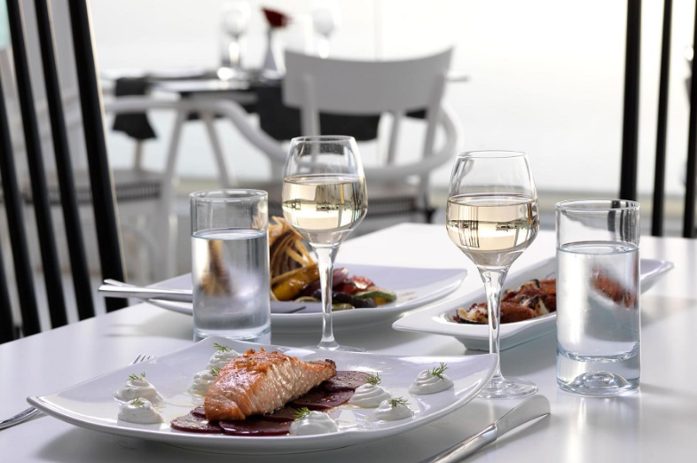
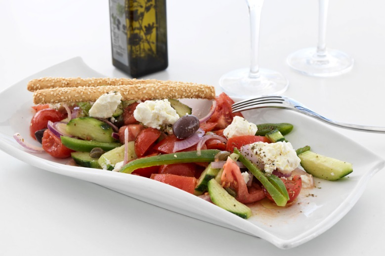
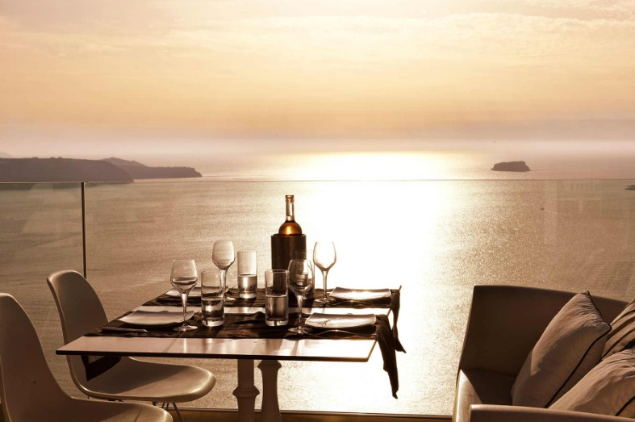
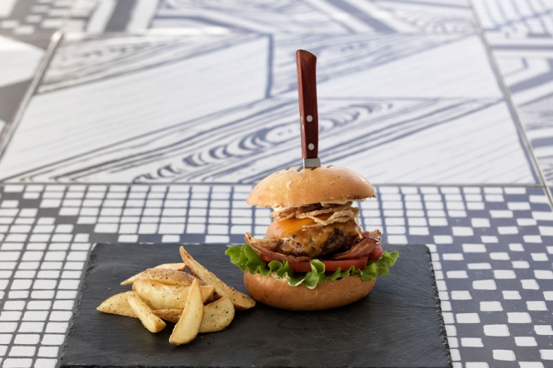
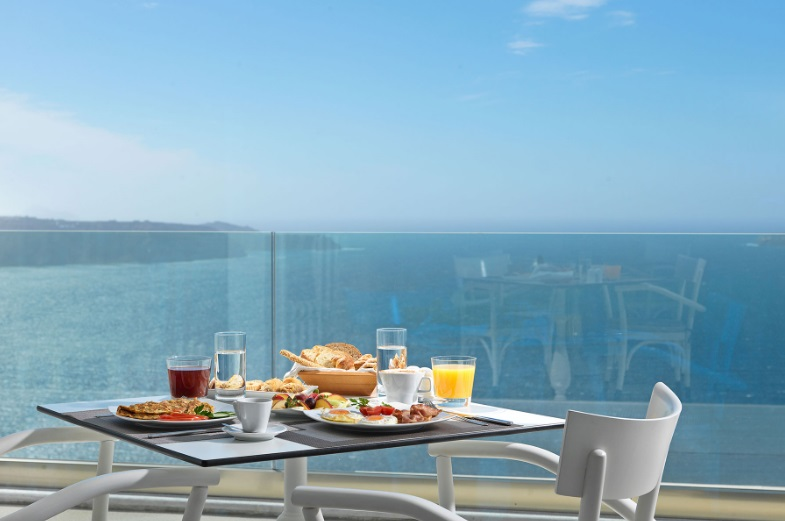

At the Lilium Restaurant, you will start your day with a pass by the breakfast buffet where, every morning, you will find a wide variety of delicious, freshly made treats that will make your mornings in Santorini such a wonderful experience. At lunchtime, snacks and light dishes are prepared fresh to accompany your hours of relaxation by the infinity swimming pool. When dinner time comes, the restaurant is illuminated by the flickering light of candles and the starlight for a romantic and a delicious experience with creative tastes that take you on a delicious journey across the Mediterranean cuisine with the creative touch of the famous Greek chef Dimitris Skarmoutsos, whereas from the bar you will order your favourite drinks and cocktails or a local wine to even more enjoy the natural beauty that surrounds you!. The famous Santorini wines are the perfect complement to your gastronomic experience in Lilium Restaurant!
Dimitris Skarmoutsos is one of the most famous Greek chefs. With a long experience and a limitless of inspiration, Chef Skarmoutsos creates a menu with creative combinations of exquisite local Greek products that reflect the lusciousness of the Mediterranean cuisine. His immense inspiration finds its perfect expression in the menu of Lilium Restaurant and a stunning spot with amazing views to present his creations, for a memorable and gastronomically complete experience in the restaurant of Lilium Santorini Hotel.